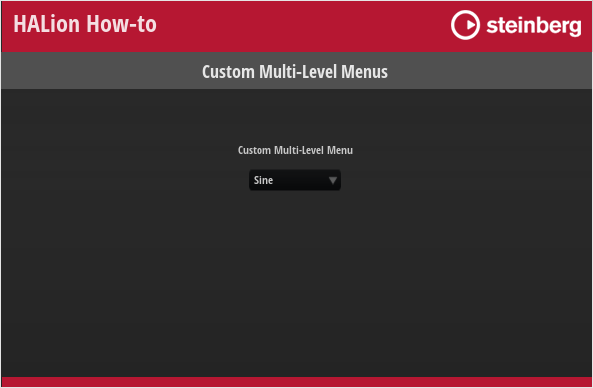

/ HALion Developer Resource / HALion Tutorials & Guidelines / How-tos /
Custom Multi-Level Menus
On this page:
The standard menu control can be used to control parameters offering a list of options, for example, the oscillator type of a synth oscillator. Although the menu control is a fast way to implement selection menus, its disadvantage is that it cannot be customized in its appearance and always uses the look of the operating system menus. If you want to implement a menu that follows the look and design language of your instrument, you can create menu templates that can be opened via switches using the popup style.
This custom popup menu can be extended to a custom multi-level menu: The template for the first level of the menu provides exclusive switches that open further popup templates for the next level of the menu. The exclusive switches on the first level must be connected to the same Popup List variable. On the next level, the menu provides exclusive switches that are connected to the desired parameter.
Creating menus with this structure is very flexible and you can configure them freely in every detail. For example, you can reduce the available options by leaving them out. This structure also allows you to create menus that have a completely different look than standard menus. You can create menus with entries that are arranged in a circle or use icons instead of text, for example.
The example below demonstrates how to build a custom multi-level menu for the oscillator type of the synth oscillator. The example is presented as illustrative guide to kickstart your own solution-building process. You can adapt the look and feel, the number of menu entries, etc. by editing the corresponding templates.
❕ The menu in the example below structures the oscillator types into four subgroups. If you want to show the oscillator types in a single list, please refer to Custom Popup Menus.
❕ HALion 7 introduced another method for creating custom multi-level menus. See Custom Multi-Level Menus II for details.
Example VST Preset

To explore the templates in this example:
- Load Custom Multi-Level Menus.vstpreset.
- Open the Macro Page Designer, go to the Templates Tree and select the template you want to explore.
- Click Edit Element
 to examine the template.
to examine the template.
Prerequisites
- A program with a synth zone and a macro page.
- A group with a Switch, a Text and an Image control.
- A Menu Root template for the first level of the menu.
- A RootMenuEntry template for creating the entries of the first level menu.
- A SubMenu_1, 2, 3, 4 template for each second level menu.
- A MenuEntry template for creating the entries of the second level menu.

How the Elements Interact
Multi-Level Menu Selector
The Multi-Level Menu Selector Group in the GUI Tree contains the elements Menu Switch, Menu Value and Menu Back.

Menu Switch is a Switch control that is configured to open the popup menu. It uses the Popup style with the Menu Root template which contains a Popup List variable and entries for each submenu. The entries for the submenus use the RootMenuEntry template to determine the entries in the root menu. All entries must be connected to the same Popup List variable which selects the SubMenu_1,2,3,or 4 template for the respective entry. The RootMenuEntry template uses the hover exclusive mode to open the respective submenu template when you hover over an entry. The SubMenu_1,2,3,4 and MenuEntry templates determine the entries of the submenus. All aforementioned templates will be explained in more detail below. Menu Value is a text control for displaying the current value and Menu Back is an image control for the background picture.
Menu Switch
This Switch control is used to open the Menu Root template as a pop-up. Since it is combined with a background image and a text, the switch itself does not require any graphics. To open the pop-up menu, the properties of the switch must be set to the following values:
| Property | Values |
|---|---|
| Mode | push |
| Style | Popup |
| Template | Menu Root |
| Close on Click | Outside |
| Placement | Place Left, Place Right, Place Below |
Menu Value
This Text control is connected to the oscillator type parameter and displays the selected type.
Menu Back
This Image control displays a backgroud picture, which is simply a black panel.
Menu Root
This template contains four instances of the RootMenutEntry template, one for each oscillator subgroup. The entries are determined by their Template Parameters: The names of the entries is set with the MenuText (Standard, Sync, Cross, or XOR). All four entries must be connected to the same Popup List variable @submenus and the OnValues must be set accordingly (1-4). When hovering the mouse over a menu entry, it will open the submenu template that refers to the OnValues 1-4.

Variables submenus
The Popup List variable "submenus" selects the SubMenu_1,2,3,4 templates for the respective entry. The order of the list refers to the OnValues 1-4.

RootMenuEntry
This template represents one entry of the root menu. It consists of four elements:

Triangle
This Image control displays a open menu triangle.
Text
This Text control displays the name of the entry. The Style of the control is set to Read-Only so that the text cannot be edited. The Value of the text is exported and the name is set to MenuText on the template level.
Switch
This Switch control uses the hover exclusive mode to open the respective submenu template when you hover over an entry. Since it is combined with a background image and a text, the switch itself does not require any graphics. To open the submenu template, the properties of the switch must be set to the following values:
| Property | Values |
|---|---|
| Value | Exported to the template level. |
| Mode | hover exclusive |
| Style | Popup, Scalable |
| Close on Click | Inside, Outside |
| Placement | Place Right, Place Below |
| Bmp On | MenuHover |
| Onvalue | Exported to the template level. |
Image
This Image control displays a background picture for the entry.
SubMenu_1, 2, 3, 4
Each of these templates contains four instances of the MenuEntry template, one for each oscillator type. The entries are determined by their Template Parameters: The names of the entries is set with the MenuText (e.g., Sine, Triangle, Saw, or Squ PWM). All four entries must be connected to the type parameter of the desired oscillator and the OnValues must be set accordingly (0-15).
For example:
| Parameter | Value |
|---|---|
| MenuText | Sine |
| OnValue | 0 |
| Value | @0:Zone 1/@id:b0001 |
for the Sine oscillator or
| Parameter | Value |
|---|---|
| MenuText | Sine Sync |
| OnValue | 4 |
| Value | @0:Zone 1/@id:b0001 |
for the Sine Sync oscillator.

MenuEntry
This template represents one menu entry of the SubMenu_1,2,3,4 templates and must be instantiated for each oscillator type. It consists of three elements:

Text
This Text control displays the name of the entry. The Style of the control is set to Read-Only so that the text cannot be edited. The Value of the text is exported and the name is set to MenuText on the template level.
Switch
This Switch control uses the exclusive mode to set the respective oscillator type when you select an entry. Since it is combined with a background image and a text, the switch itself does not require any graphics. The properties of the switch must be set to the following values:
| Property | Values |
|---|---|
| Value | Exported to the template level. |
| Mode | exclusive |
| Style | Hover, Scalable |
| Bmp Hov | MenuHover |
| Onvalue | Exported to the template level. |
Image
This Image control displays a background picture for the entry.
❕ Popup menus can only be displayed within the dimensions of the macro page. If a popup menu is too large, it will be clipped. To prevent this, you can either change the direction in which the popup menu opens, e.g., open it to the top instead of to the bottom, or you can change the size of the template, so that it fits, and then activate the scrollbar to be able to scroll to the available entries.